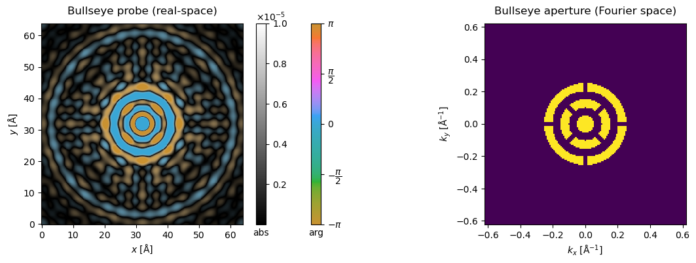
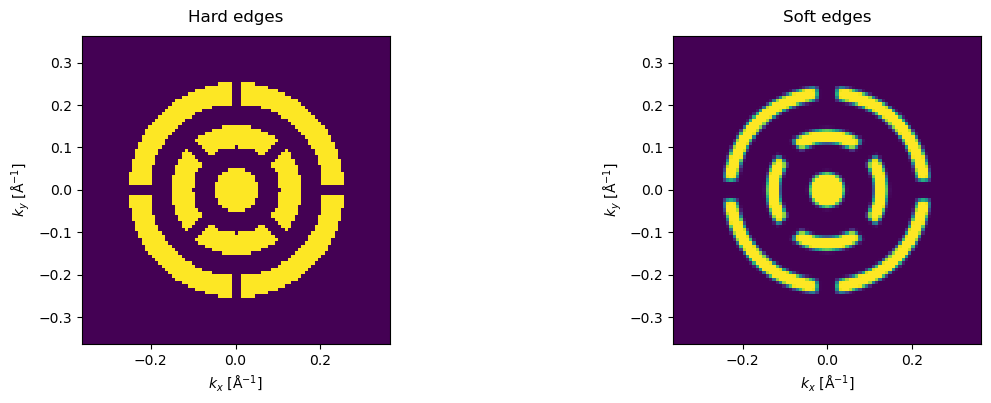
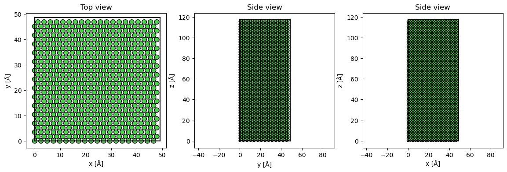
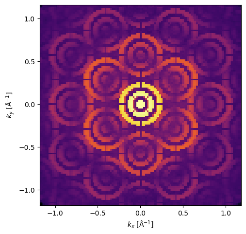
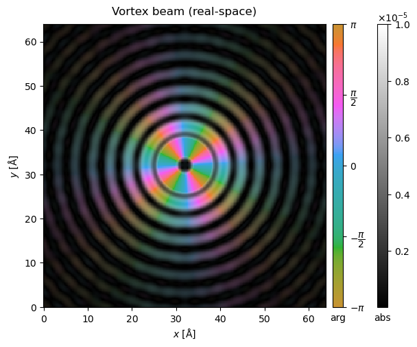
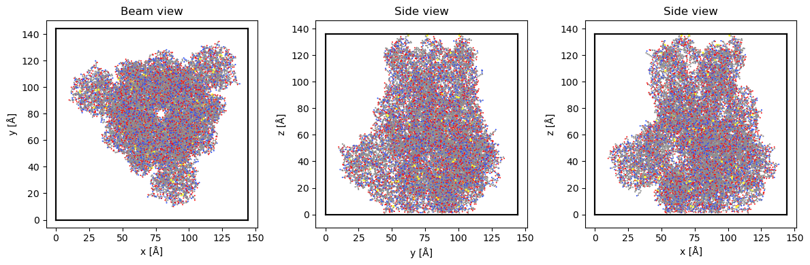
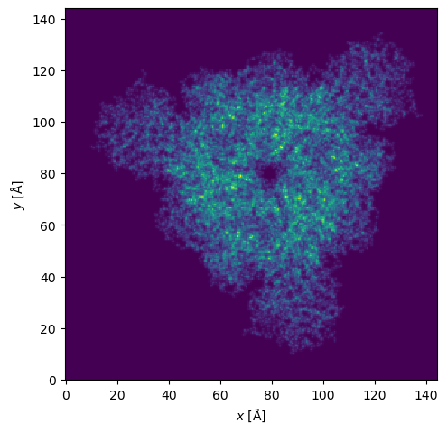
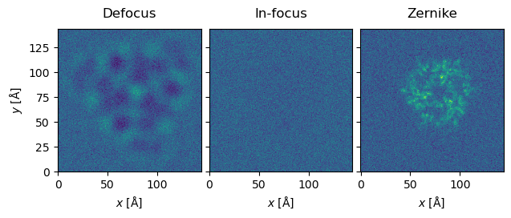

Structured illumination#
abTEM supports various kinds of structured illumination for use with focused or parallel probes.
The code examples below were contributed by Stephanie Ribet based on work published in [RZV+23] and [ZMullerB+20].
Let’s first define a standard focused probe.
energy = 300e3
semiangle_cutoff = 5
extent = [128,128]
sampling = [0.2,0.2]
probe = abtem.Probe(
energy = energy,
extent = extent,
sampling = sampling,
semiangle_cutoff = semiangle_cutoff
);
Bullseye aperture#
So-called bullseye apertures can be defined with a dedicated transfer class in abTEM. The pattern is controlled by the number of concentric rings (num_rings) and radial support spokes (num_spokes), and by two width parameters with different units: ring_width is the open fraction of each radial ring period, bounded to (0, 1], where 1 gives a fully open disk. spoke_width is instead a linear width, given as a multiple of the open annulus width — it has no equivalent upper bound of 1, and because it is a constant linear (not angular) width, the same spoke_width blocks a larger angular fraction of the inner rings than the outer ones. The spokes on alternating rings are staggered, as in typical experimental designs. In practice this is used as an aperture in Probe to define a bullseye probe.
bullseye = abtem.transfer.Bullseye(
num_spokes = 4,
num_rings = 3,
spoke_width = 0.5,
ring_width = 0.5,
semiangle_cutoff = semiangle_cutoff,
energy = energy,
extent = extent,
sampling = sampling
)
probe_bullseye = abtem.Probe(
energy = energy,
extent = extent,
sampling = sampling,
semiangle_cutoff = semiangle_cutoff,
aperture = bullseye
)
fig, (ax1, ax2) = plt.subplots(1, 2, figsize=(14,4))
probe_bullseye.build().to_images().crop((64,64),(32,32)).show(ax=ax1, vmax = 1e-5, cbar=True, title="Bullseye probe (real-space)")
probe_bullseye.build().diffraction_patterns(max_angle=12).show(ax=ax2, title="Bullseye aperture (Fourier space)");

Real apertures are not perfectly sharp. Since version 1.0.10, the Bullseye aperture supports smoothing the edges of the rings and spokes via edge_softness and rounding their corners via corner_radius (both in mrad).
bullseye_soft = abtem.transfer.Bullseye(
num_spokes = 4,
num_rings = 3,
spoke_width = 0.5,
ring_width = 0.5,
semiangle_cutoff = semiangle_cutoff,
energy = energy,
extent = extent,
sampling = sampling,
edge_softness = 0.3,
corner_radius = 0.3,
)
probe_bullseye_soft = abtem.Probe(
energy = energy,
extent = extent,
sampling = sampling,
semiangle_cutoff = semiangle_cutoff,
aperture = bullseye_soft
)
fig, (ax1, ax2) = plt.subplots(1, 2, figsize=(14,4))
probe_bullseye.build().diffraction_patterns(max_angle=7).show(ax=ax1, title="Hard edges")
probe_bullseye_soft.build().diffraction_patterns(max_angle=7).show(ax=ax2, title="Soft edges");

4D-STEM with bullseye probe#
Let’s run an example simulation with a Ni slab.
Note that the real-space extent of the potential determines the reciprocal-space sampling of the diffraction patterns, hence the large number of repetitions!
Ni_atoms = read("data/Ni.cif")
Ni_atoms = surface(Ni_atoms, (1, 1, 0), 4, periodic=True)
repetitions = (10,14,12)
Ni_atoms *=repetitions
fig, (ax1, ax2, ax3) = plt.subplots(1, 3, figsize=(14,4))
abtem.show_atoms(Ni_atoms, ax=ax1, title='Top view')
abtem.show_atoms(Ni_atoms, ax=ax2, plane='yz', title='Side view')
abtem.show_atoms(Ni_atoms, ax=ax3, plane='xz', title='Side view');

Adding frozen phonons to the potential; if we did not use them we could use CrystalPotential instead of repeating the model above.
frozen_phonons = abtem.FrozenPhonons(Ni_atoms, 12, 0.1)
potential = abtem.Potential(
frozen_phonons,
sampling=0.2
)
Scanning a grid over one unit cell of the potential with a full 2D pixelated detector.
scan_end = (potential.extent[0] / repetitions[0], potential.extent[1] / repetitions[1]) # Scan over one unit cell.
gridscan = abtem.GridScan(start=[0, 0], end=scan_end, sampling=1.0)
detector = abtem.PixelatedDetector(max_angle='valid', resample='uniform')
measurement = probe_bullseye.scan(
potential=potential,
scan=gridscan,
detectors=detector,
).compute()
A single diffraction pattern selected from the scan shows the effect of the aperture.
measurement[0, 0].show(cmap='inferno', power=0.2);

Vortex beams#
We can also define vortex beams with a given quantum number, resulting in variation of the complex phase around the azimuthal direction of the probe.
vortex = abtem.transfer.Vortex(
quantum_number = 4,
semiangle_cutoff = semiangle_cutoff,
energy = energy,
extent = extent,
sampling = sampling
)
probe_vortex = abtem.Probe(
energy = energy,
extent = extent,
sampling = sampling,
aperture = vortex,
semiangle_cutoff = semiangle_cutoff
)
probe_vortex.build().to_images().crop((64,64),(32,32)).show(vmax = 1e-5, cbar=True, title="Vortex beam (real-space)");

TEM phase plates#
Sample: Covid spike protein
Finally, let’s illustrate the use of a Zernike phase plate on an HRTEM phase-contrast image of the Covid spike protein.
#Load protein structure.
atoms = read('data/3jcl.xyz')
atoms.positions[:,0] -= atoms.positions[:,0].min()
atoms.positions[:,1] -= atoms.positions[:,1].min()
atoms.positions[:,2] -= atoms.positions[:,2].min()
atoms.cell[0][0] = atoms.positions[:,0].max()
atoms.cell[1][1] = atoms.positions[:,1].max()
atoms.cell[2][2] = atoms.positions[:,2].max()
atoms.center(vacuum = 10, axis = (0,1))
atoms.cell[0][0] = atoms.cell[1][1]
fig, (ax1, ax2, ax3) = plt.subplots(1, 3, figsize=(12, 4))
abtem.show_atoms(atoms, ax=ax1, title="Beam view", linewidth=0)
abtem.show_atoms(atoms, ax=ax2, plane="yz", title="Side view", linewidth=0)
abtem.show_atoms(atoms, ax=ax3, plane="xz", title="Side view", linewidth=0)
fig.tight_layout();

#Make and show the potential.
potential = abtem.Potential(
atoms,
sampling = 0.5,
)
potential.project().show();

#Calculate exit waves.
wave = abtem.waves.PlaneWave(energy=300e3)
exit_waves = wave.multislice(potential).compute()
Let’s then define a Zernike phase plate (which is a special instance of a more generic RadialPhasePlate class): a central hole surrounded by another annular area up to the semiangle cutoff with the given phase shift of \(\pi\).
zernike = abtem.transfer.Zernike(
center_hole_cutoff = 1/10,
phase_shift = np.pi,
semiangle_cutoff = semiangle_cutoff,
energy = energy,
)
#CTFs for in-focus and defocus.
ctf_defocused = abtem.CTF(
aberration_coefficients={'C10': -10000},
semiangle_cutoff = 1,
energy=300e3)
ctf_infocus = abtem.CTF(
aberration_coefficients={'C10': 0},
semiangle_cutoff = 1,
energy=300e3)
dose = 1000
#Calculate in-focus, defocus, and Zernike images.
image_defocus = exit_waves.apply_ctf(ctf_defocused)
image_infocus = exit_waves.apply_ctf(ctf_infocus)
image_zernike = exit_waves.apply_ctf(zernike)
intensity_defocus = image_defocus.intensity()
intensity_infocus = image_infocus.intensity()
intensity_zernike = image_zernike.intensity()
noisy_defocus = intensity_defocus.poisson_noise(dose)
noisy_infocus = intensity_infocus.poisson_noise(dose)
noisy_zernike = intensity_zernike.poisson_noise(dose)
#Zernike provides best transfer of information
noisy_stack = abtem.stack([noisy_defocus, noisy_infocus, noisy_zernike], ["Defocus","In-focus","Zernike"])
noisy_stack.show(explode=True, common_color_scale=True);
